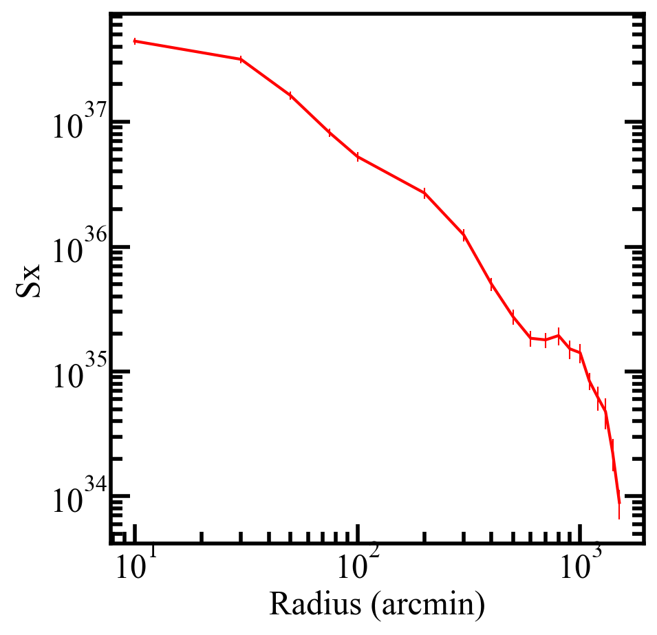
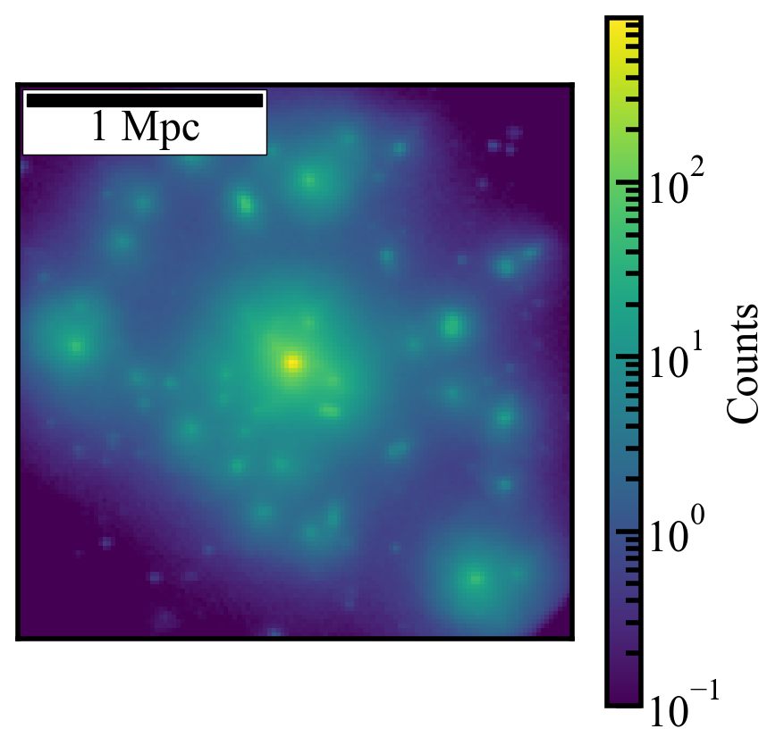

Running and Plotting X-ray Data¶
This cookbok walks through a basic end-to-end run of RAFIKI-CGM’s X-ray functionality.
Setting up the Config File¶
Copy the example config file into your directory.
cp config_example.yaml config.yaml
Set the path to where the RAFIKI-CGM data is saved and select the simulation
package_data:
path: /path/to/your/data/
sim: RAFIKI_A
Choose X-ray analyses:
analysis:
sz_radial_profiles: false
sz_moment_profiles: false
thermal_energy: false
sz_stacked_image: false
xray_profiles: true
xray_stacked_image: true
Select your galaxy sample. In this example we are matching a catalog of galaxies used in eROSITA analyses, with an additional cut of minimum solar mass. We resample the simulated galaxies 200 times to match the observed distribution (see cookbook/galaxycookbook to explore what this sample looks like)
selection:
method: matching #Options: ranges | matching
#Applied in both methods as an initial cut:
property_ranges:
centrals_only: true #Restrict to central galaxies only
stellar_mass_min: 6e10 # Solar Masses (null=no cut)
stellar_mass_max: null
halo_mass_min: null # Solar Massess
halo_mass_max: null
ssfr_min: null # Gyr^-1
ssfr_max: null
#Used only in method: matching
catalog:
path: keep_CEN.csv #Comparison catalog
match_property: stellar_mass #Options: stellar_mass | halo_mass
column: 1 #Column index of match_property in catalog
bins: [10.7,10.8,10.9,11,
11.1,11.2,11.3,11.4,11.5,11.6] #log10 solar masses
n_sample: 400
Select your X-ray analysis parameters. Here we are wanting to generate mock eROSITA images, with an exposure time of 1000ks. Our stacked image will contain counts for photons between 0.5 and 2 keV, and we include no backgrounds or foregrounds.
xray:
redshift: 0.1 #Snapshot redshift (currently only 0.1 supported)
soxs_instrument: erosita #Options: erosita | <any SOXS instrument label>
exposure_time_ks: 1000 #Exposure time (ks)
emin: 0.5 #Minimum energy (keV)
emax: 2 #Maximum energy (keV)
radial_bins: [0, 10, 30, 50, 75, 100, 200,
300,400, 500, 600, 700, 800,
900, 1000, 1100, 1200, 1300, 1400, 1500] #Radial bin edges (kpc)
#Background components for instrument simulation
ptsrc_bkgnd: false #Point source background
instr_bkgnd: false #Instrumental background
foreground: false #Astrophysical foregrounds
Point to where you want the data to save
# Output
output:
directory: ./results/
label: rafiki_A_example
Running the Pipeline¶
Run the pipeline from the command line
python run_pipeline.py --config config.yaml
While running you will see a series of SOXS outputs like:
Number of selected analog galaxies: 333
soxs : [INFO ] 2026-03-18 11:39:32,765 Detected 1462 events in total.
soxs : [INFO ] 2026-03-18 11:39:32,765 No backgrounds will be added to this observation.
soxs : [INFO ] 2026-03-18 11:39:32,769 Observation complete.
soxs : [INFO ] 2026-03-18 11:39:32,769 Writing events to file /Users/skylargrayson/Dropbox (ASU)/RAFIKI-CGM/Full Cleaned Pipeline/rafiki_cgm_PACKAGE/testing/RAFIKI_A_example_gal_sample_z_37_ma3.fits.
soxs : [INFO ] 2026-03-18 11:39:32,843 Simulating events from 1 sources using instrument erosita4 for 1000 ks.
soxs : [INFO ] 2026-03-18 11:39:32,955 Scattering energies with RMF sixte_erormf_normalized_singles_20170725.rmf.
Scattering energies : 100%|████████████████████████████████████████████████████████████████████████████████████████████████████████████████████████████████████████████████████████████████████████████████████████████| 1495/1495 [00:00<00:00, 90562.90it/s]
soxs : [INFO ] 2026-03-18 11:39:32,973 Detected 1495 events in total.
soxs : [INFO ] 2026-03-18 11:39:32,973 No backgrounds will be added to this observation.
soxs : [INFO ] 2026-03-18 11:39:32,977 Observation complete.
soxs : [INFO ] 2026-03-18 11:39:32,977 Writing events to file /Users/skylargrayson/Dropbox (ASU)/RAFIKI-CGM/Full Cleaned Pipeline/rafiki_cgm_PACKAGE/testing/RAFIKI_A_example_gal_sample_z_37_ma4.fits.
soxs : [INFO ] 2026-03-18 11:39:33,051 Simulating events from 1 sources using instrument erosita5 for 1000 ks.
soxs : [INFO ] 2026-03-18 11:39:33,159 Scattering energies with RMF sixte_erormf_normalized_singles_20170725.rmf.
Remember that the number of selected galaxies is equal to three times the actual number in the simulation box as it accounts for the three different projections.
Loading and Plotting Your Results¶
Note
The matching approach to galaxy sample selection includes random selection during the resampling process, so your results may be slightly different than the example shown here.
Once the pipeline has finished running you can load the output files and plot the radial profiles and stacked image as below
import numpy as np
from matplotlib import pyplot as plt
import h5py
data_file = 'results/rafiki_A_example_xraydat.hdf5' #path to saved stacked radial data-should be the only thing you need to change
#-------------RADIAL PROFILES-------------#
#-------------RADIAL PROFILES-------------#
with h5py.File(data_file, 'r') as f:
x_a = f['radial_profile/radius'][:]
y_a = f['radial_profile/Sx'][:]
err_a = f['radial_profile/error'][:]
plt.plot(x_a,y_a)
plt.errorbar(x_a,y_a, yerr=err_a)
plt.xlabel('Radius (arcmin)')
plt.ylabel('Sx')
plt.yscale('log')
plt.xscale('log')
plt.show()
{kind=link}

#-------------STACKED IMAGE-------------#
import matplotlib.colors as colors
from mpl_toolkits.axes_grid1.anchored_artists import AnchoredSizeBar
with h5py.File(data_file, 'r') as f:
y_a = f['image/image_dat'][:]
fig, ax = plt.subplots()
y_a[y_a == 0] = 1e-1 #To allow log plotting
plt.imshow(y_a, norm=colors.LogNorm(vmin=1e-1, vmax=np.max(y_a)))
plt.colorbar(label='Counts')
plt.xlim(384-384/6,384+384/6) #Properly center the FOV
plt.ylim(384-384/6,384+384/6)
scalebar = AnchoredSizeBar(ax.transData,
54.38, '1 Mpc', 'upper left',
pad=0.1,
color='black',
frameon=True,
size_vertical=3)
ax.add_artist(scalebar)
ax.set_xticks([]) # Remove x ticks
ax.set_yticks([]) # Remove y ticks
ax.set_xlabel("") # Remove x label
ax.set_ylabel("")
plt.show()
{kind=link}
